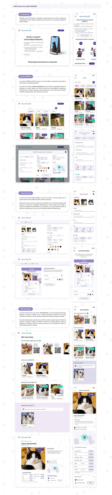
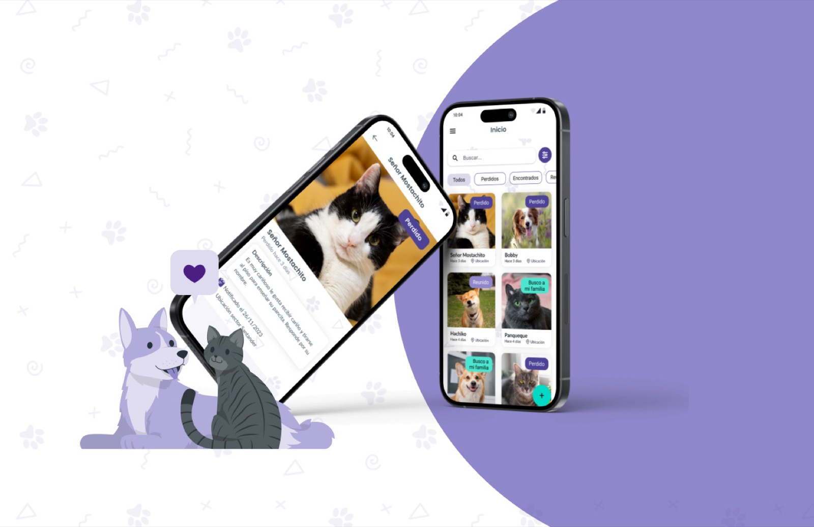

Losing a pet creates urgency, stress and scattered information. The product needed to make reporting, searching and sharing simple for people with different levels of digital confidence.
Case study / Responsive web product
Helping lost pets find their way back home.
Rastrea Patitas is a responsive platform concept for reporting lost pets, publishing alerts, creating searchable pet profiles and using QR codes and posters to support faster reunions.
Product Design
Responsive Web
User Research
MVP Definition
UI System

Product Designer involved in research, MVP definition, visual direction, wireframes, UI guidelines and prototype design.
A responsive web experience with pet profiles, lost/found states, search filters, posters, QR identification and alert creation.
Story
A community search experience designed for urgency and trust.
The project started from a simple but emotionally intense problem: when a pet goes missing, owners need to act quickly, share reliable information and receive updates without navigating a complicated tool.
The design combines familiar behaviors - posting, searching, filtering and sharing - with structured pet data, QR codes and printable posters so online and offline search efforts can work together.
01 / Research
Understanding how people actually search for lost pets.
The research included competitor analysis and a survey with 40 potential users. The findings showed that people rely heavily on nearby search, social networks and clear visual information when trying to recover a pet.
- 85% of respondents had lost a pet at least once.
- 97.5% expressed interest in a digital tool for lost pet search.
- Photos, last known location and owner contact details were the most valued information.
survey participants helped validate the problem space.
had experienced losing a pet at least once.
were interested in a digital tool for lost pet search.
02 / Benchmark
Finding opportunities between local search, social reach and identification.
The competitor review looked at lost-pet apps, alert tools and paid geolocated search services. The biggest opportunity was to combine the speed of social sharing with structured pet profiles and a more accessible reporting flow.
- Some products made search easy but registration felt unclear.
- Others supported alerts but lacked strong lost/found relocalization.
- Paid promotion tools had reach, but created friction for urgent cases.
03 / Users + MVP
Defining the smallest useful product for a high-stress moment.
The MVP focused on core actions that could create immediate value: register a pet, publish a lost or found alert, search active cases and generate shareable materials. Two user personas shaped the priorities: an anxious owner with low digital confidence, and a digitally fluent person who finds a lost pet and needs a fast way to contact the owner.
- Basic pet registration with name, species, photo and identifying traits.
- Lost and found posts with location, description and contact information.
- Simple authentication so owners can manage profiles and alerts.
- Search filters by status, location and pet information.
04 / Flow
From first report to a shareable alert.
One of the key flows follows an owner who enters the website, starts a lost pet report, signs in quickly, publishes the alert and creates a poster with a QR code that can connect people back to the pet profile.
- Reduced the reporting flow to essential fields.
- Kept status changes visible: lost, found, reunited and looking for family.
- Connected digital search with offline sharing through posters and QR codes.
05 / UI System
A gentle visual system for clarity, reassurance and action.
The interface uses a soft purple and aqua palette, rounded cards and clear labels to keep the product approachable while still supporting structured data, forms and alert states.
- Designed cards for lost, found, reunited and unclaimed pet states.
- Created form components, search inputs, dropdowns, modals and status controls.
- Used responsive layouts for desktop and mobile search contexts.

06 / High Fidelity
Designing the product around the moments that matter.
The high-fidelity screens cover onboarding, active search, filters, alert creation, poster generation, pet profile management and the pet detail page. Each screen supports a practical search action: understand the product, report quickly, filter results, share the alert and contact the right person.
- Onboarding explains the service and the steps to find a pet.
- Search cards make lost, found, reunited and looking-for-family states visible.
- Filters support species, size, gender, color, location and pet status.
- QR posters bridge online reports with offline neighborhood search.

07 / Outcome
A responsive MVP that connects digital alerts with real-world search.
Rastrea Patitas became a complete product concept with a clear service model, validated user need, structured pet data, responsive screens and a visual system that makes stressful reporting tasks feel more approachable.